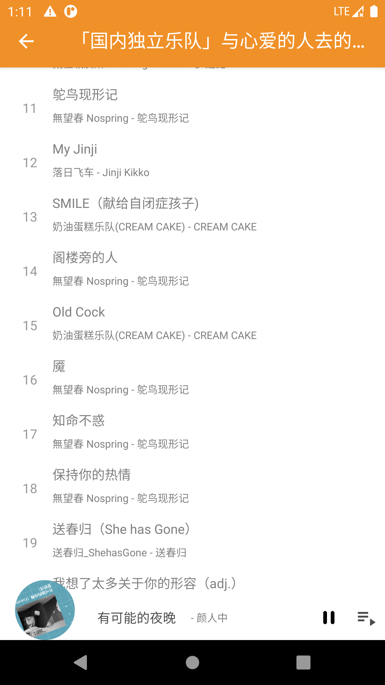

歌单是用一个Activity来显示
预览

new add
歌单这页实现功能有两个点分享
共享元素过渡动画 1 2 3 4 5 6 7 8 9 10 11 12 13 14 15 16 17 itemView.apply { setOnClickListener { data .resources?.let { val intent = Intent(context, PlayListActivity::class .java) intent.putExtra("resourceId" , data .resources[0 ].resourceId) intent.putExtra("alg" , data .alg) intent.putExtra("imageUrl" , data .imageUrl()) val options = ActivityOptions.makeSceneTransitionAnimation( activity, create(image, data .resources[0 ].resourceId)) ActivityCompat.startActivity(context, intent, options.toBundle()) } } }
取色 跳进不同专辑歌单，StatusBar背景色动态改变采用Palette取色修正，加载Image是用了coil
1 2 3 4 5 6 7 8 9 10 11 12 13 14 15 16 17 18 19 20 21 22 23 24 25 26 27 28 val request = ImageRequest.Builder(this @PlayListActivity ).allowHardware(false ) .data (imageUrl) .target( onSuccess = { result -> if (showType1) { val builder = Palette.from(result.toBitmap()) builder.generate { palette -> palette?.vibrantSwatch?.let { vibrant -> Timber.d("load success palette" ) setThemeColor(vibrant.rgb) } ?: let { Timber.d("load success default" ) setThemeColor(getColor(R.color.white70)) } } } else { header.root.background = result val color = ContextCompat.getColor(this @PlayListActivity , android.R.color.transparent) setStatusBarColor(color) toolbar.setBackgroundColor(color) } } ) .build() imageLoader.enqueue(request)
起先这里我是使用了模糊效果，但效果不太好看，还是取色更贴近
弧线 由图片可以看到底部的弧线，我是通过重写了AppCompatImageView再通过Xfermode
首先要有一个弧度轮廓来填装图片，通过Path画出来
1 2 3 4 5 6 7 8 9 override fun onSizeChanged (w: Int , h: Int , oldw: Int , oldh: Int ) super .onSizeChanged(w, h, oldw, oldh) path.moveTo(0f , 0f ) path.lineTo(w.toFloat(), 0f ) path.lineTo(w.toFloat(), (h - 32. dp).toFloat()) path.quadTo((w / 2 ).toFloat(), h.toFloat(), 0f , (h - 32. dp).toFloat()) path.close() }
然后就是通过PorterDuff.Mode.SRC_IN剪切交集部分留下Src完成图片就剪切
1 2 3 4 5 6 7 8 9 10 11 12 13 14 15 16 private val paint = Paint(Paint.ANTI_ALIAS_FLAG).apply { isFilterBitmap = false style = Paint.Style.FILL } private val xfermodePaint = Paint(Paint.ANTI_ALIAS_FLAG).apply { isFilterBitmap = false style = Paint.Style.FILL xfermode = PorterDuffXfermode(PorterDuff.Mode.SRC_IN) } override fun onDraw (canvas: Canvas ) val sc = canvas.saveLayer(0f , 0f , width.toFloat(), height.toFloat(), null ) canvas.drawPath(path, paint) canvas.drawBitmap(makeSrc(), 0f , 0f , xfermodePaint) canvas.restoreToCount(sc) }
补：滚动时恢复原图片
1 2 3 4 5 6 7 8 9 10 11 12 13 appBar.addOnOffsetChangedListener(object : AppBarStateChangeListener() { override fun onStateChanged (appBarLayout: AppBarLayout , state: State ) when (state) { State.COLLAPSED -> { header.ivBackground.enableClip(false ) } else -> { header.ivBackground.enableClip(true ) } } } })
参考 http://www.jcodecraeer.com/a/anzhuokaifa/androidkaifa/2016/0816/6543.html https://developer.android.com/guide/topics/renderscript/compute.html https://github.com/coil-kt/coil https://android.googlesource.com/platform/development/+/master/samples/ApiDemos/src/com/example/android/apis/graphics/Xfermodes.java